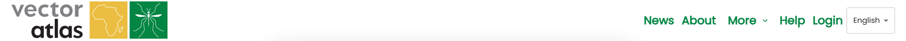
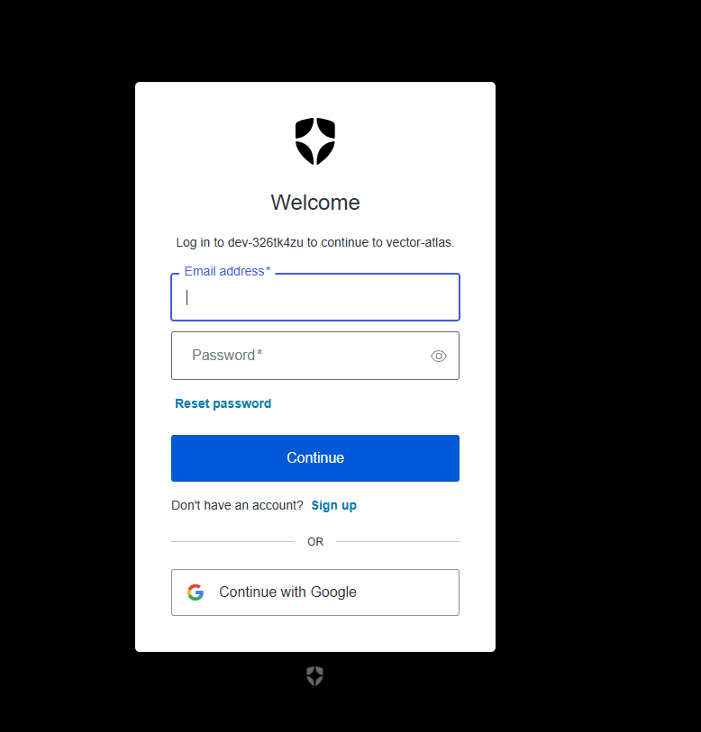
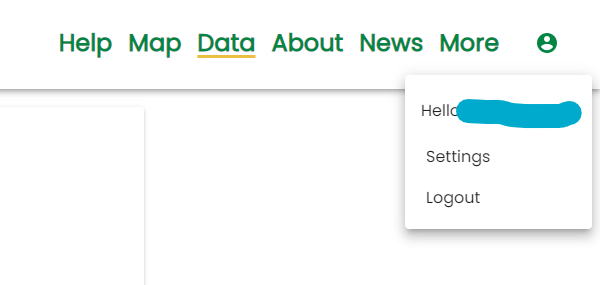
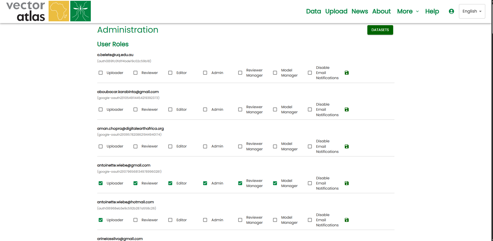
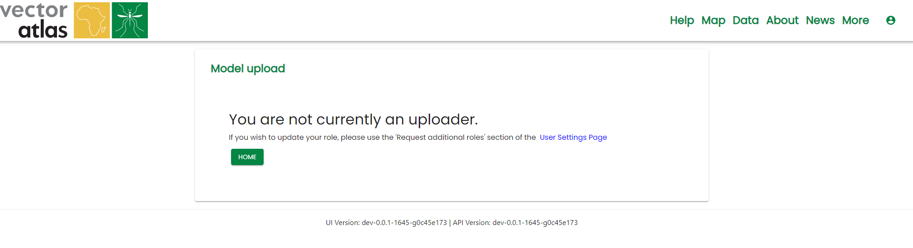

S’inscrire sur le site
Most operations do not require a log in as the data is intended to be open. The time that a log in is required is when contributing data to the site, this means we can assign roles to users who are uploaders, those who are reviewers and those who are editors for the site.
To sign up to the site, click on the Login button in the top right of the navigation menu.

Cela vous redirigera vers le fournisseur d’authentification du Vector Atlas, Auth0. Cliquez sur l’option Sign up sous le bouton « Continue ».

Saisissez votre adresse e-mail, créez un mot de passe et cliquez sur Continue. Cela vous inscrira sur le site et vous redirigera vers la page d’accueil, mais vous n’aurez encore aucun rôle attribué à ce stade.
Vous recevrez un e-mail d’Auth0 vous demandant de vérifier votre adresse e-mail en cliquant sur un bouton dans le message. Une fois cette vérification effectuée, l’équipe du système pourra vous attribuer des rôles.
Pour demander de nouveaux rôles, rendez-vous sur la page Settings dans le menu utilisateur.

Sur la page des paramètres utilisateur, cliquez sur le bouton Request additional roles pour ouvrir le formulaire des rôles. Sélectionnez les rôles dont vous avez besoin : téléverseur (uploader) pour téléverser des données ou des superpositions de modèles, réviseur (reviewer) pour réviser les données avant leur publication, éditeur (editor) pour modifier les actualités et les informations sur les espèces, administrateur (admin) pour être administrateur du site.
Indiquez un motif pour votre demande, puis cliquez sur soumettre la demande ; cela enverra un e-mail aux administrateurs avec les rôles demandés, votre identifiant Auth0 et le motif de la demande. Ils devraient ensuite vous répondre directement.

De la même façon, vous n’avez pas besoin de connaître à l’avance les rôles dont vous aurez besoin. Le système affichera un message de non-autorisation si vous tentez d’effectuer une opération pour laquelle vous n’avez pas le rôle requis. Par exemple, si vous accédez à la page Data Hub et sélectionnez Upload Model, vous recevrez un message indiquant que vous n’êtes pas téléverseur, et serez redirigé vers la page des paramètres utilisateur.
